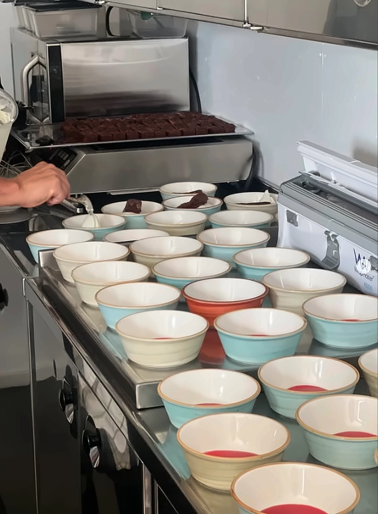

Upplevelser och kurser
Måla och skåla, målarkurs, bussbesök och mentorsprogram.
Se upplevelserna →En lada från början av 1900-talet som blivit ateljé och galleri, omgiven av en parkliknande trädgård. Här målar Emilia Linderholm och här lagar Jonas Danielsson mat med doft av Medelhavet.

Måla och skåla, målarkurs, bussbesök och mentorsprogram.
Se upplevelserna →Färgstarka kvinnogestalter i olja på linneduk, och glas.
Läs om konsten →
Generös och vällagad mat med inspiration från Frankrike och södra Europa.
Läs om maten →Emilia har också separatutställning hos Tranås-bygdens konstförening 13–29 november. Följ Konstladan på Instagram för uppdaterade tider.


Konstladan tar emot grupper för måleri, mat och besök i trädgården. Priser och bokning går via Emilia.
Lev ut konstnärsdrömmarna i ateljén. Ni målar i akryl på canvas, utifrån ett motiv ni alla utgår från, och Emilia guidar steg för steg. Det handlar om lust, inte prestation, och ingen behöver ha målat förut. Passar kompisgänget, 50-årsfirandet, företagseventet eller den mindre konferensen.
10–20 personer. WiFi och utrustning för en mindre konferens finns.

Akryl på duk och akvarell, med enkla och tydliga uppgifter. För dig som vill testa på, och för dig som kommit en bit och vill vidare i ditt eget uttryck. Nya datum släpps snart.
Minst 10 personer. Betalas via faktura två veckor före kursstart.
Boka en buss och upplev gården. Fika eller medelhavsbuffé, Emilias föreläsning, tid i galleriet och ett besök i trädgården där Jonas berättar om växter och odlingar. Lunch och övernattning i närheten kan ordnas.
För dig som målat ett tag och vill hitta ditt personliga uttryck. Fem tillfällen under en termin, 2,5 timmar i månaden, i ateljén eller online. Terminen avslutas med vernissage. Fem deltagare per termin, med väntelista.
”Vi var lyriska!” Tack också till Jonas för den goda maten.Maria, SPF Habo
Maila Emilia på emilia@linderholm.se eller ring 070-144 60 31.
Emilias uttryck är färgstarkt och levande. Med sina kvinnogestalter vill hon väcka känslor hos betraktaren. Hon målar i olja på linneduk, formger glas, och sången och musiken genomsyrar skapandet.
Platshållare. Emilias egna bilder läggs in här.
Du kan boka en visning i ateljén och konstladan om du letar efter ett originalverk. Kontakta Emilia på emilia@linderholm.se.
En doft av Medelhavet mitt i det småländska landskapet. Jonas matlagning präglas av kärlek till Medelhavets dofter, råvaror och smaker, och ska vara generös, lustfylld och vällagad, med inspiration från det franska och sydeuropeiska köket.
Matstudion på gården har ett komplett restaurangkök. Maten går att beställa till måla och skåla, kurser och bussbesök, och på krittavlan vid containern står crêpes, galetter och croissanter.
Desserter i skålar, uppställda i matstudions kök.
Crêpes, galetter och croissanter står på menyn.
Gäster på grusgården en solig dag, med rosor intill containern.
En annan stor passion är trädgården, med över 250 planterade rosor. Jonas odlar både blommor och ätbara grödor, allt från prunkande blomster till den egna potatisen som så småningom hamnar på tallriken. Mest är det återbrukade växter.
Jonas kommer från Braås och var yrkesverksam musiker i 17 år i Stockholm, med turnéer, tv och radio. Efter flytten tillbaka till Småland utbildade han sig till kock. Skapandet har varit den röda tråden hela vägen.
Kontakta Jonas på 070-668 98 76 eller jonas.danielsson1@gmail.com.